Visual Perturbation Demos
Each row shows a perturbation type across intensity levels: Light → Moderate → Heavy → Severe
KITTI Dataset (Outdoor Driving)
LightModerateHeavySevere
Rain
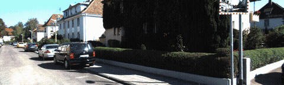
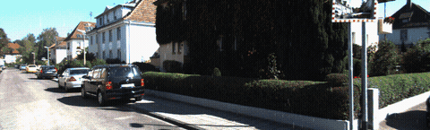
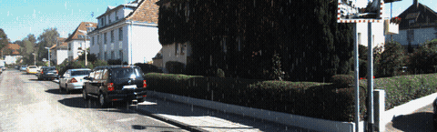
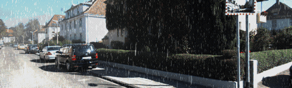
Night + Fog
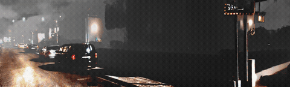
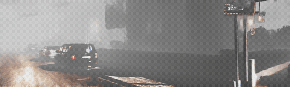
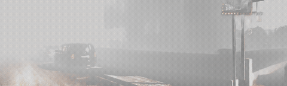
Network Degradation
Rain + Lens Soiling
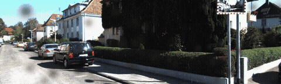
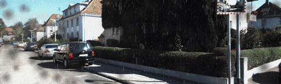
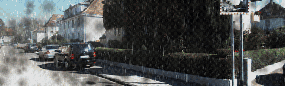
Soiling + Network
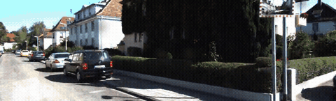
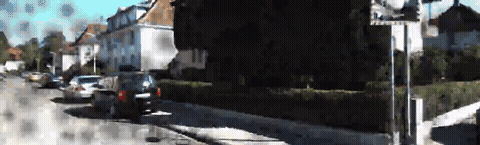
TUM RGB-D Dataset (Indoor)
LightModerateHeavySevere
Cracked Lens
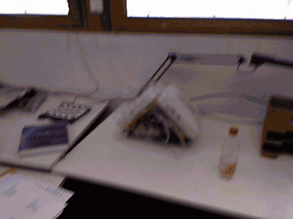
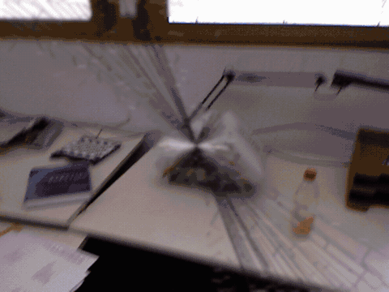
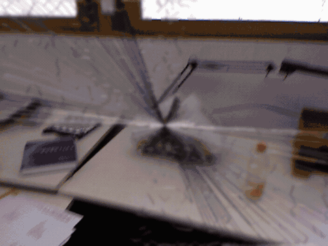
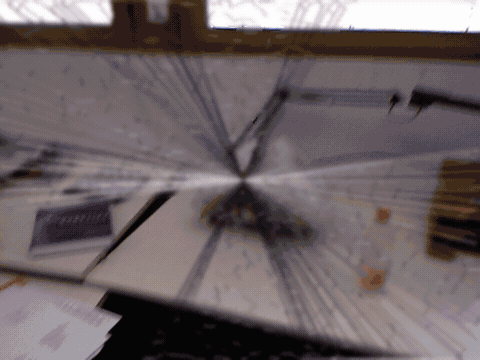
Lens Soiling
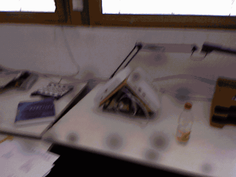
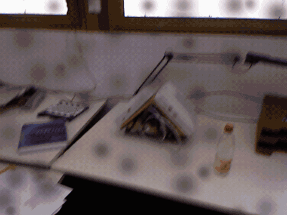
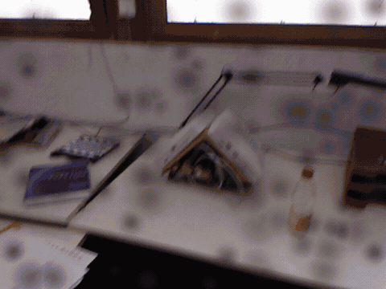

Network Degradation
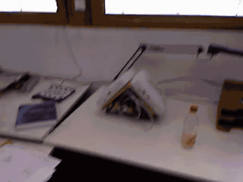
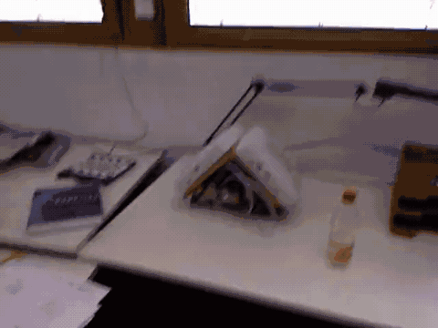
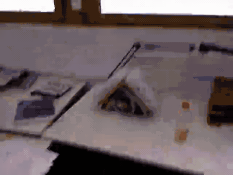
Soiling + Crack
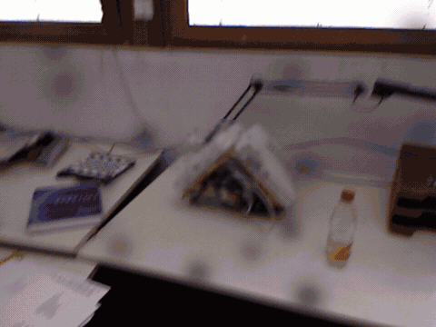
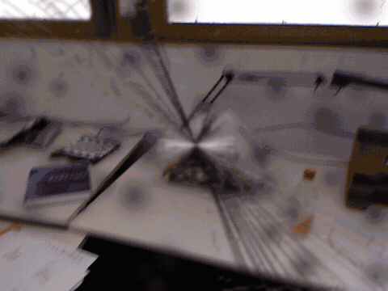
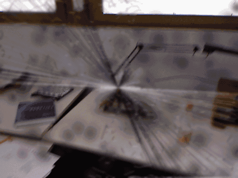
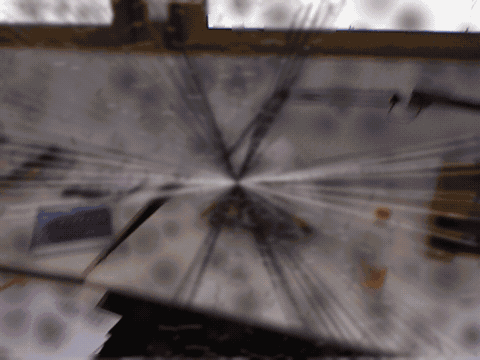